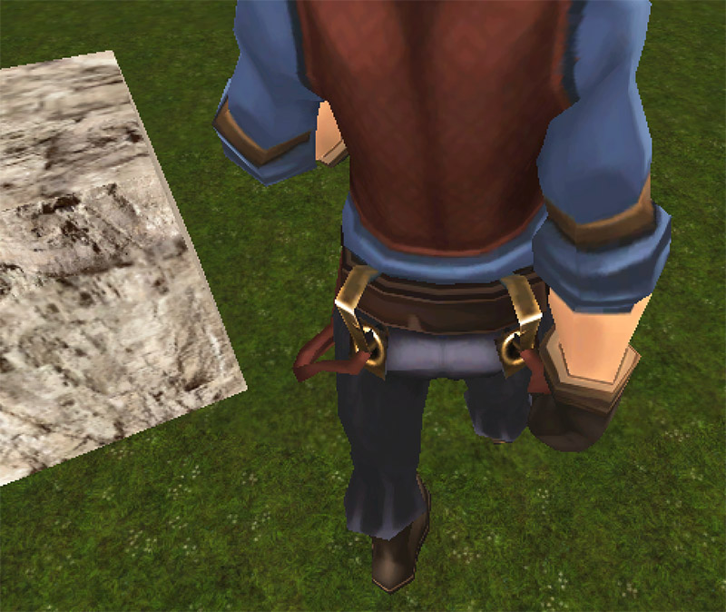
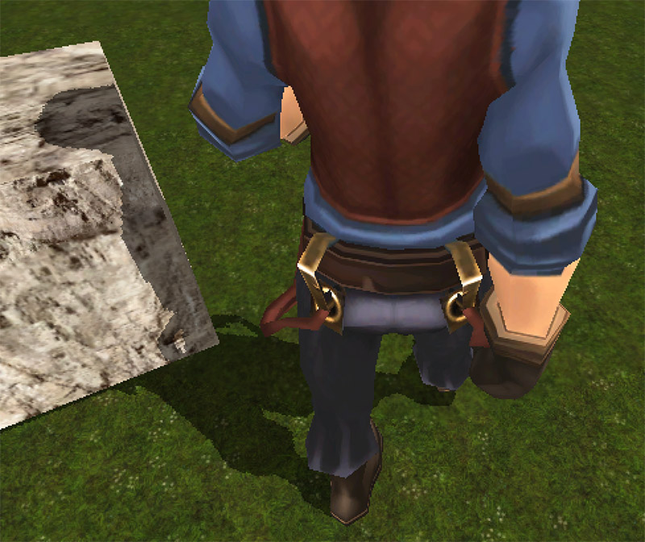
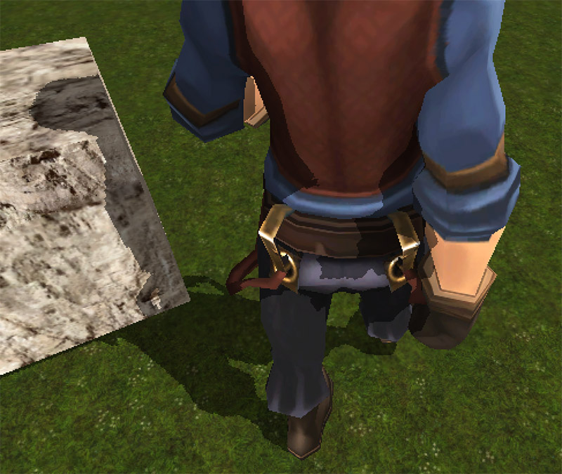
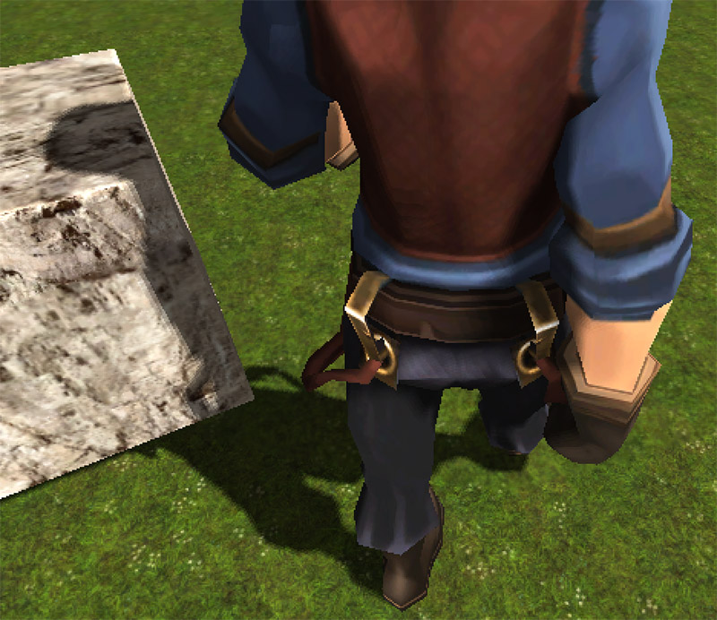
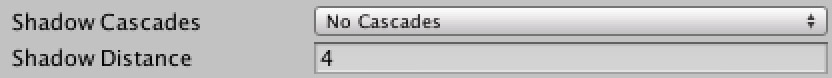
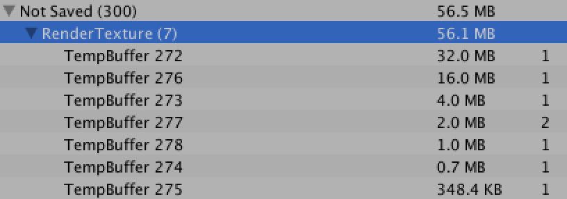

实现 Shadow Mapping
2016-6-15
以前介绍过了在移动设备如何做实时阴影，那篇文章中提到的方法其实是一种简化版的 Shadow Mapping。这里之所以要再次提起这个问题，主要是因为我想在角色的特写部分，给角色加上自阴影的效果，使整个画面更立体。
| a:Unlit | b:Mobile Shadow |
|---|---|
|  |  |
| c:Shadow Mapping | d:Shadow Mapping PCF |
|---|---|
|  |  |
- a:Unlit：无光照（阴影）效果
- b:Mobile Shadow：移动设备实时阴影效果
- c:Shadow Mapping：基本的 Shadow Mapping 实现
- d:Shadow Mapping PCF：Shadow Mapping 使用 PCF（Percentage Closer Filtering）方法的软阴影（这就是实现的效果）
其实 Unity 已经内置了影功能，为什么不使用呢。一是效率问题：当我把 Unity 内置的阴影质量设置为普通时，表现效果是不理想的，当设置为高质量时，表现效果勉强可以接受了，但是内存偏高。想要将低内存，只能把 Shadow Cascades 设置为最低，把 Shadow Distance 调小。二是表现效果的精确控制：无法直接控制阴影区域的亮度或颜色（需要修改 Surface Shader），以及阴影到非阴影的过度（经常会造成整个模型偏黑）。

Unity 内置的阴影，修改这两个值将内存降低，但是阴影覆盖范围变小了。

Unity 内置的阴影，当保证阴影覆盖范围和质量时，内存偏高。Shadow Cascades。
所以这里我自己实现了一版 Shadow Mapping，效果见上图。下面说明下实现的步骤。
- 从光源方向生成一张深度纹理，生成的方法我在以前的一片文章中有介绍过。

- 渲染模型的时候，计算当前顶点在光源空间中的深度值 a，并将顶点映射到深度纹理的 uv 坐标（方法见移动设备实时阴影），取出深度值 b，将这两个深度值进行比较。当 a 大于 b，表示在阴影中，否则不在阴影中。
至此实现的效果如上图中的 c:Shadow Mapping。你也许会发现画面上有很多杂点或者黑色条状条纹，这主要是由于数字精度造成的。当我们把深度值作为颜色分量存储到 RenderTexture 时，就意味着精度的丢失。因为单个通道（R或G或B）的精度只能达到 1/255。所以 Unity 提供了一个技巧，EncodeFloatRGBA 将一个 0 到 1 的 float 值存储到 RGBA 四个通道中，这样就不会丢失 float 的精度。使用 DecodeFloatRGBA 将 RGBA 值解码为一个 0 到 1 的 float 值。所以使用这种方式得到的深度纹理是类似下面这样的。

最后，使用 PCF 方法实现软阴影。关于 Shadow Mapping 的软阴影，有一篇非常好的教程，其中介绍了各种解决方法。最终效果如图 d:Shadow Mapping PCF。